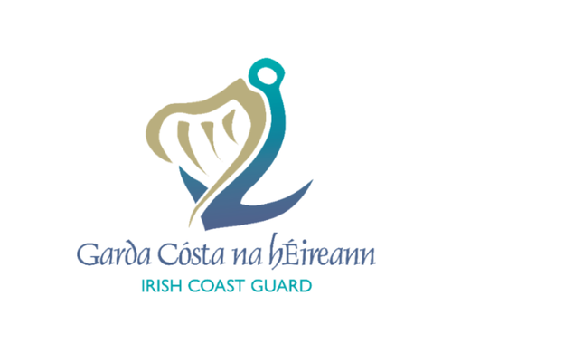
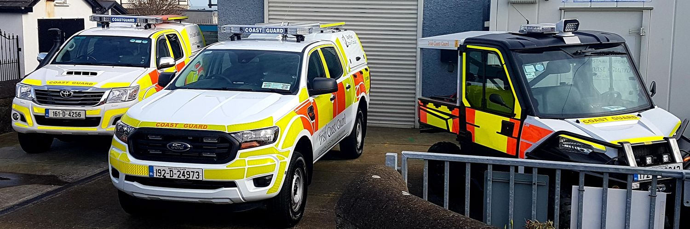

A community of trained volunteers committed to saving lives on the North Dublin coast.
Skerries Coast Guard was established in 1991 as part of the national Irish Coast Guard volunteer network. Located in the historic fishing town of Skerries on the Fingal coast, our unit was formed in response to the growing need for a dedicated search and rescue capability north of Dublin Bay.
Over more than three decades, our volunteers have responded to hundreds of incidents — from drone-assisted missing person searches and swimmer emergencies to locating casualties along remote stretches of the North Dublin coastline. The unit operates under the authority and direction of the Irish Coast Guard (IRCG), a division of the Department of Transport.
What began as a small group of local volunteers has grown into a professional, well-equipped search and drone unit with close ties to An Garda Síochána, the National Ambulance Service, and Dublin Fire Brigade.

Our Officer in Charge (OIC) leads the unit and coordinates with IRCG Marine Rescue Sub-Centre Dublin. The OIC is responsible for operational readiness, training standards, and volunteer welfare.
All volunteers complete a rigorous IRCG training programme covering first aid, drone operations, search techniques, radio communications, and water safety. Ongoing training ensures skills remain sharp.
Our station houses a range of specialist equipment including drone systems, stretchers, first aid kits, VHF radios, and personal protective equipment supplied by IRCG.
Skerries Coast Guard works in close partnership with a range of emergency services and national bodies.
Irish Coast Guard
Parent organisation & operational authority
Skerries RNLI Lifeboat Station
Coordination on coastal incidents
An Garda Síochána
Coordination on coastal incidents
National Ambulance Service
Pre-hospital care partnerships
Dublin Fire Brigade
Joint exercises & incident support
Fingal County Council
Community safety & infrastructure
Our volunteers' dedication and courage have been recognised at the highest levels.
Skerries Coast Guard is a proud recipient of the Ministerial Meritorious Service Award, recognising the unit's sustained, exceptional contribution to search and rescue on the North Dublin coast.
Individual members of our unit have received commendations for bravery for their actions during rescues — testament to the courage and commitment our volunteers show when lives are on the line.
We are currently recruiting new volunteers. No prior experience is required — full training is provided by the Irish Coast Guard.
Apply to Volunteer